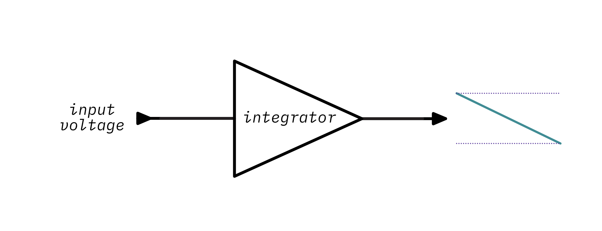
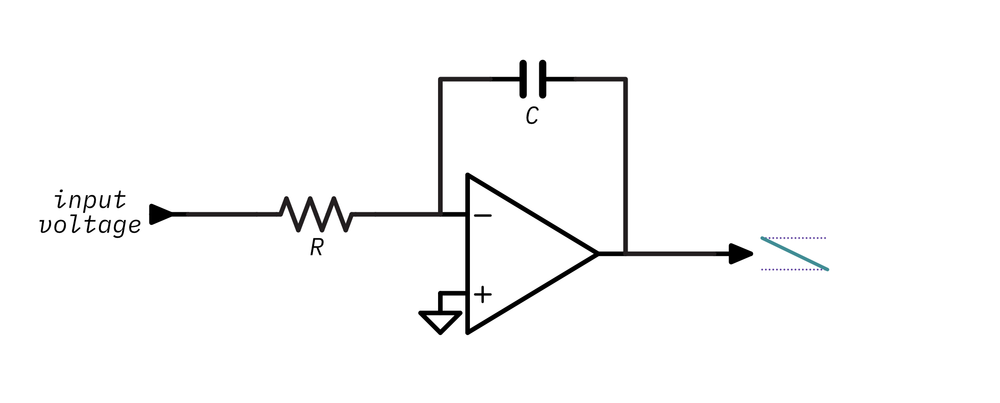
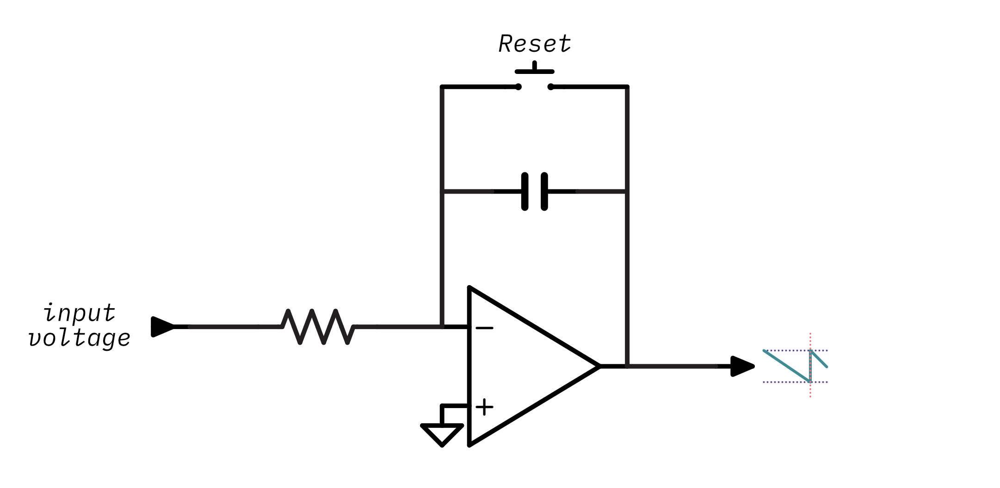
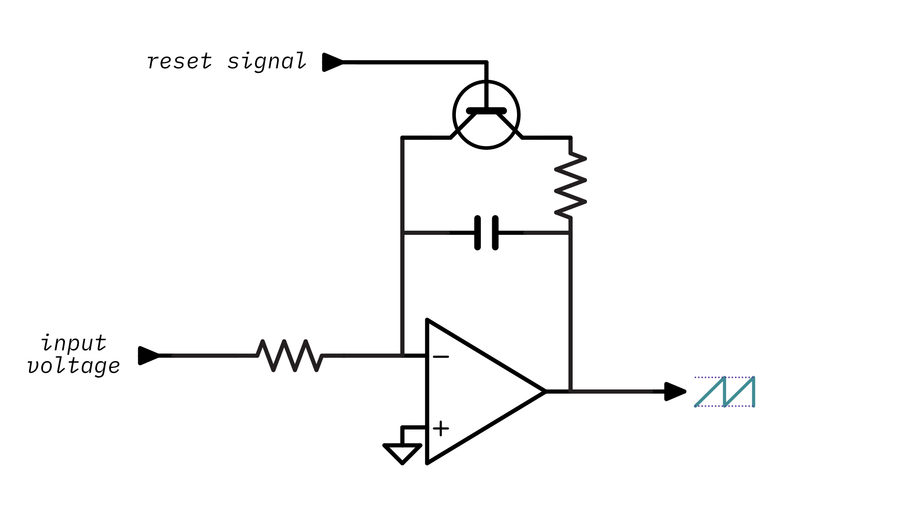
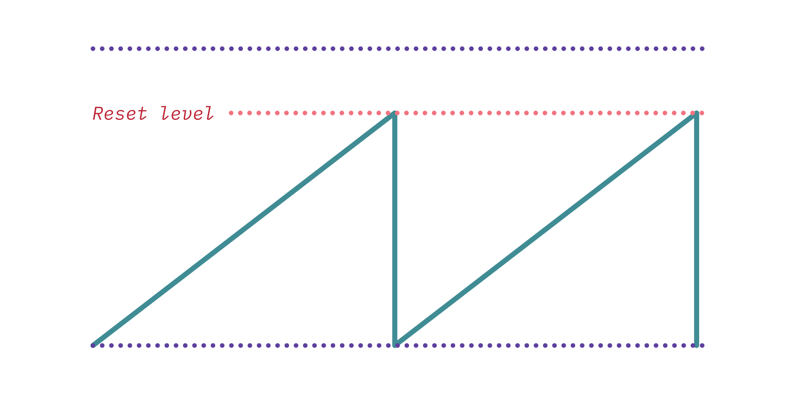
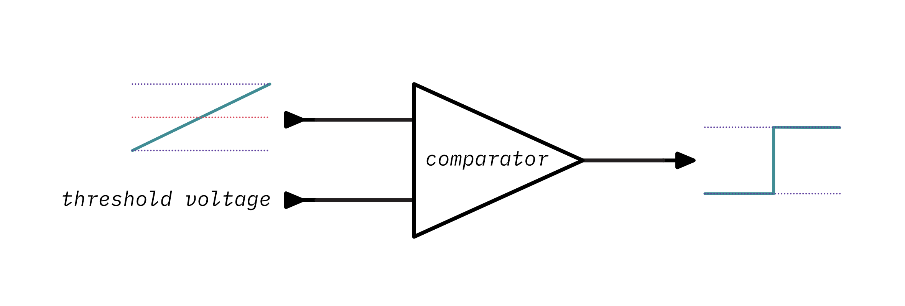

The Design of the Roland Juno oscillators
This article is a comprehensive guide to the Roland Juno's digitally-controlled analog oscillators (DCOs). I fell in love with the Juno early in my synthesizer journey and I've spent the last year or so doing research on its design so that I could create my own Juno-inspired DCO, Winterbloom's Castor & Pollux.

This article will cover a little history of the Juno, discuss the theory of operation behind digital-controlled oscillators, analyze the circuit designs for the Juno 6/60 & the Juno 106, and discuss practical aspects of using DCOs. This article is somewhat lengthy and there is a lot of information here. I've tried my best to make this approachable for anyone with basic electronics knowledge, so if you feel confused or overwhelmed please reach out and I'll be more than happy to include more details or change something so that it's easier to understand.
A little history
Roland introduced the incredible Juno-6 and nearly identical Juno-60 in 1982. The Juno was a 6-voice polyphonic synthesizer that was an incredible value considering its array of features.

The Juno notably featured digitally-controlled analog oscillators. The DCO was designed to overcome the tuning instability of the usual voltage-controlled oscillators (VCOs) in contemporary polyphonic synthesizers. The DCOs operate with the same fundamental analog circuitry but differ in that they are controlled by a microcontroller. This imparted a unique sound to the Juno series and one that's become a favorite of many musicians.

Roland followed with the Juno-106 in 1984. It offered some feature upgrades over its predecessor such as pitch bend, modulation, and support for a new thing called MIDI. It still used the same digitally-controlled oscillator concept from the 6 & 60, but its implementation is a little bit different.
This article will discuss and analyze both designs, but before getting into the nitty-gritty details let's take a look at the overall sound generation design of the Juno. Also, this article will refer to these three synthesizers - the 6, 60, and 106 - as the Juno, but note that this isn't necessarily applicable to later models.
An overview of the Juno's sound generation
The Juno has six voices. Each voice has a single oscillator that can generate three different waveforms. These oscillators are controlled by the microcontroller. Here's a block diagram that should help visualize the different parts at play:

Sound generation starts with a square wave controlled by the microntroller and then goes through a series of waveshapers which generates a ramp/sawtooth waveform, a sub waveform (which is a square wave at half the frequency), and a pulse waveform. The frequency of the clock determines the frequency/note that the oscillator plays.
This is in contrast to a common design for a voltage-controlled oscillator (VCO) where a CPU isn't required. Instead, it uses analog circuitry to create a control voltage which determines the oscillator's frequency:

Now that you've got a high-level overview of the sound generation inside of these synthesizers, let's take a deeper look at the components involved in sound generation.
The ramp generator
Before jumping into the difference between DCOs and VCOs it's useful to discuss the similarities. As shown in the block diagrams above several designs for VCOs and the Juno DCOs are designed around a ramp generator (sometimes referred to as a ramp core) which creates a sawtooth (ramp) waveform:

The ramp generator is the beginning of how an oscillator turns a frequency input signal into the various useful waveforms that are used to make musical sounds. For a VCO, the frequency input signal is a control voltage, hence "voltage-controlled". For a DCO, the frequency input signal is a digital clock, hence "digitally-controlled".
The difference in the type of input signal has a significant impact on the circuit design. Before getting into those differences, let's look at the heart of the ramp generator that's shared between both designs: the integrator.
The integrator
An integrator is a electronic circuit that performs the mathematical operation of Integration. This is a fancy word from calculus but don't be afraid- it's actually pretty straightforward in practice.
The purpose of an integrator is to produce an output signal that changes (increase or decreases) at a rate corresponds to the magnitude and duration of the input signal. In this case the input and output signals are both voltage. If you apply a constant voltage to an integrator, it will create a consistent increase or decrease in the output voltage over time (a ramp):

More voltage means that the ramp will have a steeper slope. This is going to be helpful in generating a sawtooth waveform- the integrator ramp produces exactly one cycle of a sawtooth waveform. The trick is getting it to restart so that it creates a repeating (or periodic) sawtooth waveform.
You can create an integrator using an op-amp integrator circuit:

The op-amp integrator is based on the idea that if you apply a voltage to a capacitor it takes some time to charge, in fact, it will charge at a rate that is proportional to the input voltage which sounds a lot like integration! Without going into too much op-amp theory, you can just assume that the integrator circuit will produce a voltage that increases or decreases at a rate determined by the input voltage and the values of R and C. The values of R and C determine the RC constant of the integrator - or put more simply, how long it takes the circuit to charge up. Remember this concept because it comes into play a lot in this article.
You can play around this with interactive illustration to see how changing the voltage, resistance, or capacitance changes the output of the integrator:
The formula used to determine the output voltage of an integrator with a constant input voltage at a given time is:
Vout = -(Vin / (R * C)) * time
Before going further, there are some interesting and noteworthy properties of the integrator's behavior to be aware of:
- First, notice that there are three ways of changing the steepness of the output's slope: changing the capacitance, changing the resistance, or changing the voltage. Making the voltage higher will charge the capacitor more quickly and increase the steepness of the slope. Making the resistance or capacitance lower will also cause the capacitor to charge more quickly and will increase the steepness of the slope.
- Second, the output is inverted - a positive input voltage creates a downward slope and a negative input voltage creates an upward slope. This will come into play when we look at the difference between the Juno-6/60 design and the Juno-106 design.
- Third, notice that with steeper slopes the output will saturate (stop increasing or decreasing). This is because a real op amp doesn't have an infinite amount of voltage to output and the capacitor can't hold an infinite amount of charge, so when either the output voltage is beyond the op amp's power supply or the capacitor can't hold any more charge the output voltage will saturate.
At this point you should hopefully have a good grasp on how an op-amp integrator forms a ramp from a constant input voltage. So now we'll see how to change the circuit so that instead of a single slope it generates a repeating (periodic) sawtooth waveform.
A straightforward solution is to just start the circuit over - reset it. That'll start the ramp back at zero and let it start rising (or falling) again. If you keep resetting at regular intervals the circuit will keep generating ramps and which form cycles of the sawtooth waveform.
But what does it mean to reset a circuit? Well, it means to put it back into its initial state. Think about what changes in the integrator circuit over time: the charge of the capacitor. When the circuit first starts the capacitor has no charge and the output voltage is zero, but, as time goes on the capacitor charges more and more. So resetting the circuit means discharging the capacitor.
The easiest way to discharge a capacitor is to short it: connect its two leads together so there's nothing blocking it from discharging. You can do that by putting a little switch in the circuit:

When the switch is open the integrator behaves the same as before - its output goes up or down depending on the input voltage. When the switch is closed, it creates a circuit that connects the capacitor's leads and allows it to discharge:

Once the switch is opened again the integrator starts over and begins ramping its output again.
Try out the little simulation below - press start to let the capacitor charge for a little bit and then press close switch to reset it:
Take notice that when you press the button at consistent intervals the output is a sawtooth waveform and its frequency is determined by how often you press the button and reset the capacitor.
Obviously there aren't any synthesizers out there that require you to manually tap a switch at the desired note's frequency!1 So instead of requiring a person to press a switch this circuit should take some form of frequency input signal and use it to electronically close the switch.
The switch is the easy part - there's a well-known component that can act as an electronically-controlled switch: the transistor. So, the ramp generator will use a transistor in place of the switch:

Note that I am explicitly not specifying which kind of transistor (PNP, NPN etc)- which one you choose depends on a few other factors so for now I'll keep it abstract. Notice that there's also a new resistor there between the capacitor and the transistor. This is generally a low-value resistor and it's just there to limit the current that goes through the transistor when the capacitor discharges as too much current could damage the transistor.
So now the circuit has a means of electronically resetting the capacitor. The next step is to create a circuit that takes a frequency input signal and turns it into a reset signal to control the transistor. This is the point where VCOs and DCOs diverge, as up until now their theory has been the same but the form of the frequency input signal and the way the it's used is vastly different between the two. The next few sections will explore the different approaches taken by VCO and DCO designs to control the transistor and the capacitor, and therefore, the frequency of the sawtooth waveform.
The analog voltage-controlled oscillator
Although the point of this article is to explore DCO design, it's worthwhile to spend some time examining the operating principles behind a VCO. This analysis will provide some insight into certain aspects of the DCO's design.
The analog VCO design uses a control voltage as its frequency input signal. Creating this control voltage is pretty complicated3 and it's a bit too much to discuss here, but you should know that the control voltage generation circuitry is temperature sensitive- once the instrument warms up the oscillators will be out of tune! This is one of the motivating factors behind the DCO's design.
The VCO routes the control voltage right into the ramp generator's input voltage:

The idea is that increasing the ramp generator's input voltage will cause the capacitor to charge more quickly- something you have already experienced with the interactive integrator animation.
The next step is resetting the ramp generator using the transistor. There isn't an immediately obvious way to use the control voltage to drive the transistor. However, increasing the control voltage increases the slope of the ramp. We could add a circuit that watches the output of the ramp generator and resets it using the transistor once it gets to a specific output level:

A higher control voltage would mean the ramp reaches the target voltage faster and therefore gets reset more often and leads to a higher frequency.
You can implement that kind of circuit using a comparator:

A comparator, well, compares! It takes two voltages: an input voltage and a threshold voltage. When the input voltage is below the threshold voltage, the comparator outputs a low voltage. However, if the input voltage instead is above the threshold voltage then the comparator will output a high voltage. You can play around with that here:
Note that this is a high-level ideal comparator and real ones2 require a little more work to use.
You can add a comparator to watch the output voltage of ramp generator and reset the circuit by turning on the transistor once the output is beyond the desired amplitude voltage. When the transistor turns on, the capacitor discharges and the ramp generator's output voltage will eventually fall below the comparator's threshold voltage and it'll turn the transistor back off- allowing the cycle to start over. Take a look at this circuit and animation:

Hey, look at that- a sawtooth, finally!
This is now a working voltage-controlled oscillator circuit. Play around with the control voltage in the animation and note that as the control voltage increases4 so does the waveform's frequency.
But why is that the case? And how do you determine the exact frequency that a control voltage will produce? And inversely, how do you determine the appropriate control voltage for a given frequency?
Remember that the control voltage is used to directly charge the capacitor. Think about what happens as the control voltage increases:
- The capacitor will change faster,
- Which causes the integrator's ramp to rise faster,
- Which will cause the output voltage to rise faster,
- And therefore it will reach comparator's reference voltage faster,
- Which will cause the transistor to be switched on and off faster,
- Which finally causes an increase in frequency.
So now you know how the control voltage increases the frequency but you still need to know how to calculate the frequency given the voltage and vice-versa. Remember that there are three factors that influence how long it takes the capacitor to charge: the capacitance, the resistance, and the input voltage. The ramp generator section gave this formula for calculating an op-amp integrator's output voltage:
Vout = -(Vin / (R * C)) * time
This can be re-arranged to solve for charge time and therefore the frequency. Since charge time is considered the period of the waveform and frequency is the reciprocal of a period:
time = -(C * R * Vout) / Vin frequency = 1 / time
If you select the component values for R and C and pick a desired output amplitude then you can plug those into the equation and you'll have the formula for determining frequency given a control voltage. In this case, I chose 200kΩ, 1nF, and -12V (don't worry about these values too much, I'll cover how to pick these values later):
R = 200kΩ C = 1nF Vout = -12V def frequency_for_control_voltage(Vin): time = -(C * R * Vout) / Vin frequency = 1 / time return frequency
You can use this interactive calculator to try out different control voltages and see how they map to frequencies:
More usefully you can calculate the inverse- the voltage needed for a specific frequency- by re-arranging the formula to solve for time (and therefore frequency):
time = 1 / frequency Vin = -(C * R * Vout) / time
& plugging in the same values gives you the function:
R = 200kΩ C = 1nF Vout = -12V def control_voltage_for_frequency(frequency): time = 1 / frequency Vin = -(C * R * Vout) / time return Vin
& again, here's a handy-dandy interactive calculator:
Okay, at this point that's all you really need to know about VCOs before taking a look at DCOs. Of course, this article has left out all of the hairy details of practical VCOs so consider this a very simplified VCO that's really just here to help illustrate the differences between a VCO and a DCO. If you want to learn more about building VCOs you can take a look at this tutorial, this great series of videos, or this excellent book.
Alright, let's review. The key takeaways from VCOs are:
- The VCO's frequency input signal is a control voltage. The control voltage determines how quickly the integrator's capacitor charges, and therefore, the frequency.
- The VCO's amplitude is always constant because the ramp's output level is used to determine when to reset the circuit.
The digitally-controlled analog oscillator
The biggest problem with the VCO design is that the control voltage that determines the frequency is generated by a complex circuit that is very sensitive to temperature drift and manufacturing tolerances. This means that the generated control voltage might not match up to exactly to what it should be for the desired note and it'll end up sounding out of tune. What's worse is that even if you adjust for this you'll need to re-adjust as the instrument gets warmer!
With DCOs a different scheme is used to control the frequency. Unlike the analog VCO approach where a control voltage determines the frequency, a DCO's frequency is controlled by a digital clock signal. A digital clock signal is a square wave that operates at a specific frequency. In order to play different notes a microcontroller is used to change the frequency of the clock signal.
So how can you connect this incoming clock signal to the ramp core and control the frequency? Remember back to the basic ramp generator schematic:
For now, assume that the input voltage to the comparator is some constant voltage. The transistor is really the key component in determining the frequency - how often it turns on and resets the circuit determines the frequency. The clock signal is a series of on/off periods so you could use that to turn the transistor on and off for each cycle of the clock.
If you were to connect the clock straight to the transistor then things wouldn't work quite right. Since the clock stays high for half of its cycle, that means that the transistor would stay on for half as cycle as well and the capacitor wouldn't be able to charge for half of the time:

So there has to be some circuit between between the clock and the transistor that makes sure the transistor is only turned on for a very short period of time during the clock cycle to let the capacitor discharge.
The RC differentiator
You can build a circuit that detects sharp changes in an input signal- like the rising or falling edge of a clock- and outputs short voltage spikes. This circuit is called an RC differentiator5. That's a fancy word but it's a really simple circuit. Check out the circuit below and the animation to see its effect on the clock input:

The differentiator turns the clock's square wave (in purple) into a series of voltage spikes (in teal) when there is a rising or falling edge on the clock signal. Notice that if you change the resistance or capacitance the spikes last a shorter or longer amount of time. While I won't discuss exact values just yet, the general idea is that the spikes should last just long enough to discharge the capacitor. If the spikes last too long, then transistor will be on for too long and the output would distort the start of each waveform cycle. If the pulse is too short, the capacitor won't completely discharge which will cause an unwanted inconsistences and offsets in the resulting waveform:

In practice, the RC constant of the differentiator should slightly greater than the RC constant of the ramp generator's discharge circuit:

So RCdifferentiator > RCdischarge. There are two reasons for this. The first is that the circuit needs to completely discharge the capacitor in order for the waveshape to be correct. Having the differentiator's RC constant slightly higher gives a bit more room for error because real-world component values vary. The second reason is that the transistor doesn't turn on until the base-to-emitter voltage, VBE is greater than its rated base-to-emitter saturation voltage, VBE(sat). For most common transistors, VBE(sat) is somewhere between 0.6 Volts and 0.7 Volts. Since the spikes from the differentiator quickly rise and then decrease exponentially there is some time during the spike where its voltage is too low to turn the transistor on. This visualization of the differentiator's output shows when the transistor would be on in red:
A basic DCO
The following schematic adds the clock input through the differentiator to control the transistor. Remember to assume that the integrator's input voltage is some constant voltage:

Finally, there is a sawtooth waveform on the output! Note that there is also a resistor between the differentiator and the transistor - it's there to limit the current so that the capacitor doesn't discharge all of its energy at once and overload the transistor6.
Here's an interactive animation of the DCO's output:
There is an obvious difference between DCO's output and the VCO's output: The DCO's amplitude varies across its frequency range. Lower frequencies have a higher amplitude (and are therefore louder) and higher frequencies have a lower amplitude (and are therefore quieter). In the extreme cases the lower frequencies clip (saturate the op-amp's output) leading to distortion, and the higher frequencies become inaudible. The next section will cover why this happens and how to accomplish an even amplitude across the DCO's range.
But before that, take a moment to review. You've now learned the theory behind both VCOs and DCOs. The key takeaways from DCOs are:
- The DCO's frequency is controlled by a clock signal that determines how often the transistor switches on.
- The DCO's amplitude decreases as frequency increases and therefore the DCO sounds quieter at higher frequencies unless there's some sort of compensation.
Amplitude compensation
The last section demonstrated a working DCO but with a critical flaw: its volume gets lower as frequencies get higher. This isn't very useful for a musical oscillator, so there needs to be some scheme that increases the amplitude as the frequency gets higher. This is called amplitude compensation7.
Remember that throughout the DCO section I said to assume that the integrator's input voltage was constant. This is the reason why the amplitude problem exists. Because the input voltage is constant, the integrator's capacitor is ramping at a constant rate regardless of the clock frequency. At lower frequencies it charges too quickly and the waveform gets clipped. At higher frequencies it charges too slowly and therefore doesn't have enough time to get up to the desired amplitude before the clock resets the circuit.
In a practical DCO the integrator's input voltage can't be constant because the circuit needs to increase the voltage to increase the rate of the capacitor's charge. In the VCO design, a control voltage was connected to the integrator's input voltage and was used to increase how fast the capacitor charges. The DCO can use the same idea, however, instead of the control voltage being created by complicated analog circuitry it will be generated by the microcontroller using a digital-to-analog converter (DAC). Here's the schematic with the DAC added:

The microcontroller sends more voltage through the DAC as the oscillator plays increasing frequencies. This will cause the capacitor to charge more quickly and make the waveform's amplitude consistent across the oscillator's range of frequencies. The exact voltage needed varies, but a good formula to get the approximate charge voltage needed for a given note is:
max_frequency = 5kHz note_frequency = 880 Hz target_voltage = 12V charge_voltage = target_voltage * note_frequency / max_frequency
The DCO design is now quite different from the VCO in terms of the way it's controlled. The microcontroller has to send two separate inputs into the oscillator to control its frequency and amplitude. While this might seem complicated, remember that the VCO has to be fed by complicated and temperature-sensitive circuitry. The microcontroller is capable of controlling the frequency of a DCO with a much higher degree of accuracy compared to the VCO and the requirement to control the amplitude as well is a reasonable trade-off. It also matters that the amplitude doesn't need to be very accurate because our ears are more sensitive to differences in pitch than differences in volume.
A practical DCO - The Juno 106 design
Now that we've covered the theory of operation for a DCO let's take a look at and analyze an actual DCO. The DCO schematic developed in the last section isn't far off from the Juno-106's design, so let's take a look at that:

Here's an interactive animation of the Juno-106 oscillator's output:
That's a good looking sawtooth waveform! Of course, this little animation is not an accurate simulation of the circuit- the real waveform has some nice analog oddities.
Using the understanding of the operating principles learned so far let's break down the component values in the circuit and figure out what they mean for how this DCO will behave:
- The RC differentiator has an RC constant of
10kΩ × 270pF = 2.7μs. The clock signal is5 Volts. This means the transistor will remain on for about5.3μsout of each waveform cycle8. - The transistor is a NPN transistor so it will turn on during the rising edge of the clock. This is because an NPN transistor needs a positive base voltage and the RC differentiator will create a positive voltage spike when the clock changes from low to high.
- The integrator's discharge circuit has an RC constant of
2.2kΩ * 1nF = 2.2μs. Notice that this follows the rule of thumb mentioned earlier - the differentiator's RC constant is slightly higher than the discharge circuit's. If taken in isolation the discharge circuit will leave just 9%8 of the voltage on the integrator's capacitor when the differentiator circuit turns the transistor on for5.3μs. However, since the op amp's output and the DAC's output create a voltage across the capacitor while it is discharging it will discharge a little more quickly10. - The integrator's RC constant is
200kΩ × 1nF = 0.2ms. That's equivalent to5 kHz. This effectively sets the maximum operating frequency of the oscillator.5 kHzis a great choice considering the highest note on a piano, C8, is4,186 Hz. - At the maximum operating frequency of
5 kHzthe transistor will only be on for2.7μs / 0.2ms = 1.35%of the waveform's cycle, so there won't be any issues with the transistor being on for too long and causing distortion. - The voltage coming out of the DAC is inverted, so there is a negative charge voltage being fed into the integrator. If you remember back to the integrator, it also inverts - a positive input voltage creates a falling slope and a negative input voltage makes a rising slope. So the Juno-106 uses negative charge voltage to create a rising sawtooth waveform11.
The information covered so far should also allow you to do this in reverse- that is you should be able to pick component values for a new DCO design. If you start by picking a maximum operating frequency (say, 5kHz) then you can use that to determine the integrator's RC constant:
RCintegrator = 1 / 5kHz RCintegrator = 0.2ms
Any combination of resistance and capacitance that leads to that RC constant will work. The values used by the Juno-106, 200kΩ and 1nF, are perfectly fine. Now that you have the integrator's RC constant you can work out the differentiator's RC constant by applying the rule of thumb that is should be slightly more than the integrator's RC constant:
RCdifferentiator = RCintegrator * 1.2 RCdifferentiator = 2.7μs
Again the values used in the Juno-106, 10kΩ and 270pF, are perfectly fine. The remainder of the components can largely be determined through deduction or empirically through experimentation. While it's unlikely that you'll arrive at the perfect component values on the first try, this can at least give you a good idea of how you'd begin to pick these components from scratch.
That's pretty much the Juno-106 design. Here's a few more things that might be interesting to you:
- The output voltage across the range can vary as much as
1 Volt, but that's fine- your ear won't really be able to tell the difference. - Because the Juno's DAC doesn't have a lot of resolution, the microcontroller can switch the integrator's resistor between
100kΩ,200kΩ, and399kΩso that it has more control over the amplitude for lower frequencies. - The component values chosen here are actually picked from the Juno-60's service manual with the exception of the integrator's resistor and capacitor. The Juno-106's oscillators are on seperate voice card boards and the service manual doesn't list all of the values for the passives. While I'm not 100% sure on the values I picked here, I'm fairly certain I'm at least very close.
- The microcontroller doesn't generate the clock signal directly, instead, it configures a set of programmable interval timers. The timers are clocked by an
8 MHzcrystal oscillator.
The Juno-6 & 60 design
The Juno-6 & 60 share the same oscillator design. Here's what it looks like:

It's extremely similar to the Juno-106's design with one key difference: it outputs falling sawtooth waveform. This has some impact on the circuit:
- The charge voltage is now positive. This is what leads to the falling waveform - the integrator creates a downward slope when given a positive input.
- The transistor is now a PNP transistor. This is because the falling sawtooth output is from
0Vto-12V, so the collector side of the transistor will be more negative than the emitter side. A PNP transistor is used so that the transistor can be forward biased with a negative collector-to-emitter voltage. This also means that the switch turns on during the falling edge of the clock signal because the PNP transistor requires that the base be more negative than the emitter and the differentiator produces a negative voltage spike on falling clock edges.
It's very similar to the Juno-106's, but here's an interactive animation of the Juno-6 & 60's oscillator output:
Some other interesting things about the Juno-6 & 60 implementation are:
- The Juno-6 & 60 don't use a crystal oscillator to drive the clock used for the oscillators. It instead uses an analog LC oscillator that generates a
1 MHzto3.5 MHzmaster clock and is divided down by the same programmable interrupt timers that the Juno-106 uses. The reason it's variable is because the Juno-6 & 60 apply pitch bend and LFO by modifying the frequency of the master clock. The Juno-106 has the CPU calculate that instead. - The exact transistor used is the 2SA1015. It's a pretty unexceptional transistor and was likely just chosen for cost - most of the transistors in the Juno are this transistor or the complementary NPN 2SC1815. Basically any general-purpose BJT can be used here - I used a 2N3906 for my experiments.
- The op-amps used are TL08x, a very common general-purpose op-amp. Back in the day, the TL08x series had higher noise than the TL07x series. That's no longer true and the modern amps are practically identical. If you were designing a new DCO and wanted to select a fancier, modern op-amp you might consider something like the the OPA164x.
Waveshapers
The Juno's oscillators can can output more than just a sawtooth waveform- they can also output a pulse waveform with variable pulse width and a "sub" waveform which is a square waveform at half of the input frequency.

The Juno 6, 60, & 106 all generate these waveforms the same way. The sub waveform is the easiest. Since it's a square waveform that's half the clock frequency, the clock input is sent through a D-type Flip-Flop configured as a simple divide-by-two circuit:

The pulse waveform is slightly more involved because the Juno allows you to vary the pulse width:

A clever way to generate a pulse wave with variable pulse width is to use the sawtooth output and our old friend the comparator:

The Juno uses a standard TL08x op-amp as an inverting comparator12. The comparator compares the sawtooth wave against an adjustable voltage and switches its output from on to off when the sawtooth rises above that voltage. If the voltage is at 50% of the range, then the pulse-width will be 50% because the comparator will switch halfway through the waveform. If the voltage is higher, then the comparator will remain on for a longer period of time and therefore the pulse width will be higher. If the voltage is lower, the comparator will remain on for a shorter period of time and the pulse width will be lower. This is a little easier to understand with an animation:
And that's about it! ✨
Resources and further reading
Thank you for reading through this very long post. I sincerely hope it was useful and educational. Here are some resources you might want to take a look at for further reading:
- The Juno 106 service manual, including schematics
- The Juno 6 service manual, including schematics
- Circuit.js simulation for the 106 design
- Circuit.js simulation for the 6 & 60 design
- Electric druid - Roland Juno DCOs
- synthnerd - Roland Juno 6: the DCO
- Golt! - How DCOs work, differences in Juno 6/60/106, Korg Poly-61/800, Akai AX80, Kawaii SX240
Footnotes
-
Truthfully it would be fun to watch someone try to press a button 440 times per second ↩
-
The Schmitt trigger is a common, simple to use type of comparator that will work in a practical circuit. ↩
-
This is generally accomplished using an exponential converter. ↩
-
The circuit as shown actually needs negative control voltage, but in a real VCO circuit it would take positive control voltage and run it through an exponential converter before applying it to the ramp generator. ↩
-
The RC differentiator is a specific kind of passive high-pass filter. ↩
-
This controls the base current and therefore the collector current. You can read more in this article about using a transistor as a switch. ↩
-
I don't know if it has a "real" name, but I call it amplitude compensation. 🤷♀️ ↩
-
This is calculated from the capacitor discharge formula. ↩↩
-
It takes just about 5 times longer than the RC constant for a capacitor to fully charge or discharge. ↩
-
This is actually pretty complex to calculate as far as I know - the op amp's output is constantly falling during the discharge phase, so the voltage across the capacitor will change constantly as well. ↩
-
This is totally not obvious from the Juno-106's schematic. It threw me off for a long time! ↩
-
Using an op amp as a comparator works in some cases, but there are also dedicated comparator components that generally perform much better. ↩